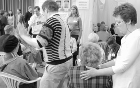

 Sekä uushengellisyyden piirissä että vaihtoehtolääkinnässä vallitsee kolme yleistä filosofista asennetta: okkultismi, mystisismi ja vitalismi. Haluttaessa muodostaa yleinen käsitys vaihtoehtolääkinnän jostain menetelmästä saattaa tällainen karkea jaottelu olla avuksi.
Suuri joukko niistä menetelmistä, järjestelmistä ja yleisistä suhtautumistavoista, jotka liittyvät vaihtoehtolääkintään ovat mystisistiä ja lankeavat okkultismiin, uskolle yliluonnolliseen; toisin sanoen ne ovat ei-naturalistisia. Naturalistisen näkemyksen mukaan yliluonnollisten tai paranormaalien seikkojen – kuten Jumalan, henkien tai vapaasti liikkuvien sielujen – edellyttäminen ei palvele mitään selittävää tarkoitusta.
Useimmat vaihtoehtoiset lääkintämuodot ovat ristiriidassa naturalismin kanssa. Niiltä menetelmiltä, jotka ovat yhteensopivia naturalismin kanssa – kuten esimerkiksi vetysuperoksidihoito (eräänlainen hapetushoito, minkä yhteydessä ainetta juodaan tai jopa väitetään tiputettavan suoraan suoneen, jolloin vetyperoksidin oletetaan tuottavan soluille lisää happea ja näin hoitavan mm. syöpää, aidsia ja monia muita sairauksia, toim. huom.), ortomolekulaarinen ruokavalio (”oikeaoppinen” vitamiinien ja hivenaineiden nauttiminen, toim. huom.) ja hainrustouute (täydentävä hoito esimerkiksi syöpään, nivelreumaan, psoriasikseen ja astmaan, toim. huom.) – puuttuu melkein aina todisteet niiden terapeuttisesta tai diagnostisesta arvosta. Tapauksissa, joissa jonkunlainen dokumentoitu vaikutus esiintyy, johtuu menetelmien vaihtoehtoinen luonne siitä, että tämä vaikutus on heikko tai epävarma verrattuna vastaaviin konventionaalisiin menetelmiin.
Usko yliluonnolliseen tarkoittaa, että maailmankaikkeuden ulkopuolella oletetaan olevan voimia (tai seikkoja), jotka vaikuttavat siihen. Mystisismi tarkoittaa yleisesti ottaen uskoa tosiseikkoihin, joiden tiedostaminen on mahdollista vain subjektiivisten kokemusten kautta. Mystisismi ja usko yliluonnolliseen käyvät osittain yksiin: molempien filosofioiden mukaan tieto on suoraan saatavissa, paranormaalisti, ilman opiskelua tai tutkimusta.
Tämä käsitys ja tieteen käsitykset ovat täysin vastakkaiset. Siitä huolimatta monien ei-naturalististen menetelmien esitetään rutiininomaisesti olevan tieteellisiä. Niiden kannattajat tuntuvat olevan haluttomia kuvaamaan niitä ensi kädessä uskonnollisina tai okkultistisina menetelminä.
Useimmat vaihtoehtolääkinnän menetelmät ovat vitalistisia. Vitalismi on vanha, biologian tieteessä useimmiten jo voitettu käsitys, jonka mukaan kaikkien elävien organismien kaikkien prosessien takana piilee jokin ainutlaatuinen periaate tai energiamuoto, joka on näkymätön ja johon ei voi koskea. Esimerkiksi puhuttaessa asiasta käyttäen termiä ”sielu” esiintyy elämänvoima yliluonnollisena, mutta muodossa ”chi” (esimerkiksi akupunktuurissa), on se pikemminkin mystisistinen.
Vaihtoehtolääkinnässä vitalismi käyttää ensi kädessä kahta tukevaa hypoteesia: teismi (yliluonnolliseen uskomisen muoto) ja vahva holismi (sukua hindu-mystiikalle). Yleisesti ottaen teismi tarkoittaa uskoa jumalaan tai jumaliin. Vahva holismi on panteismin muoto tai ”spinozaismi”, joka katsoo, että luonto on jumalallinen. Vahvan holismin mukaan universumi on yhtä ainoata ainesta – kokonaisuus, jossa kaikki asiat ovat välittömässä yhteydessä toisiinsa.
Vahva holismi on vähemmän silmiinpistävä osa ei-naturalistisia menetelmiä. Se sisältyy kaukoparannukseen ja muihin menetelmiin, jotka perustuvat ”eteeriseen kommunikaatioon” tai eetteriin ”viidentenä elementtinä”.
Vitalistisella periaatteella on muun muassa seuraavat synonyymit: elämänvoima, bioenergia, kosminen energia, kosminen energiavoima, kosminen voima, kosminen elämänenergia, kosminen elämänvoima, èlan vital, olemisen energia, force vitale, sisäinen elämisen voima, sisäinen energia, elämisen energia, elämisvoiman energia, elämisen voima, elonlähteen voima, hermovoima, persoonallinen voima, henki, subtiilinen energia, universaalinen energia, universaalinen elinvoimaenergia, universaalinen elämisenenergianvoima, universaalinen elämisenvoima, universaalinen elämisenperiaate, vitaalinen kosminen voima, vitaalielementti, vitaalienergia, vitaalinen energiavoima, vitaliteetti, vitaalinen elämisenvoima, vitaalinen elämisvoimaenergia, vitalistinen periaate, vitalistinen energia, vitaalinen elämishenki, vitaalinen magnetismi, vitaalinen periaate, elämänhenki.
Ilmaisu ”lääkitsevä voima” on synonyymi useimmille näistä ilmaisuista. Kysymys on siis siitä, että väitetään olevan ei-aineellinen ”voima”, joka ylläpitää ”elämää” ja ”parantaa / lääkitsee”. On silmiinpistävää, miten usein sanaa ”energia” käytetään tarkoittamaan sitä parantavaa voimaa, jota kvasitieteellisiä menetelmiä harrastavat väittävät niillä olevan. New Agessa ja vaihtoehtolääkinnässä energia on eniten käytettyjä teknis-/tieteellistä alkuperää olevia sanoja. Käyttämällä sitä tekee nopealla liikkeellä opistaan pseudotiedettä.
Syy, miksi usein, ilman vastaväitteitä, pystytään tekemään näin, on luultavasti, että energiakäsite on suhteellisen kompleksinen ja että harva on selvillä siitä mitä ”energialla” tarkoitetaan, mitä energiamuotoja on olemassa ja miten ne mitataan.
Millä oikeutuksella vaihtoehtolääkinnässä siis puhutaan energiasta? Tässä vaiheessa on syytä hetkeksi tarkastella fysiikan tiedettä.
Energia on fysiikan säilyviä suureita ja tarkoittaa ”kykyä suorittaa työtä”. Idea siitä, että on olemassa suureita, jotka aina ovat vakiot, joita ei voi synnyttää eikä hävittää ja jotka vain voivat siirtyä ja muuttaa muotoaan, syntyi jo antiikin aikana. 1700- ja 1800-luvuilla opittiin, että on olemassa kaksi hyvin perustavaa laatua olevaa tällaista suuretta: massa ja sähkövaraus.
Mitä sitten tarkoittaa, että massa säilyy? Esimerkki: Vuorokauden aikana henkilö ottaa sisäänsä S kiloa massaa ruoan ja juoman muodossa sekä happena keuhkojen kautta. Saman vuorokauden aikana henkilöstä poistuu P kiloa massaa ulosteiden ja hikoilun muodossa sekä keuhkojen kautta eritetyn hiilidioksidin ja vesihöyryn muodossa. Jos sisään otettu massa S on isompi kuin poistunut massa P, on henkilön massa, hänen painonsa, kasvanut määrällä, joka tarkalleen vastaa massojen S ja P erotusta. Ja päinvastoin: jos poistunut massa on otettua massaa isompi, on henkilön paino pienentynyt vastaavasti. Tämä kuvaa säilyvien suureiden yleistä käyttäytymistä: järjestelmä, jota luonnehtii määrätty rajapinta, voi kasvattaa suuretta vain pinnan läpi tulevan nettosisäänvirtauksen kautta ja pienentää sitä nettoulosvirtauksen kautta.
1800-luvulla ruvettiin otaksumaan, että oli vielä yksi säilyvä suure. Mekaniikassa oli kauan tiedetty, että jokin, jota kutsuttiin energiaksi, saattoi esiintyä kahdessa eri muodossa ja että se saattoi muuttaa muodosta toiseen. Nämä olivat: liike-energia (kineettinen energia) ja potentiaalinen energia. Mekaniikka ei kuitenkaan kuvaa koko todellisuutta. Kemialliset ja biologiset prosessit tuntuivat olevan tämän käsitteistön ulkopuolella. Iso askel eteenpäin otettiin, kun ymmärrettiin, että lämpö on eräs energiamuoto. Yksinkertaisin kokein todettiin, että määrätty määrä lämpöä tarkasti vastasi määrättyä määrää mekaanista energiaa.
Lisäkokeiden avulla löydettiin lisää energiamuotoja. Tässä yhteydessä niistä tärkein on kemiallinen energia. Eri aineiden välillä tapahtuvat kemialliset reaktiot joko tuottavat tai käyttävät energiaa. Atomistinen maailmannäkemys, joka teki voittokulkueensa 1900-luvulla, johti ymmärrykseen, että kemiallinen energia ei perimmiltään ole uusi energiamuoto. Sen sijaan osoittautui, että kemiallinen energia voidaan ymmärtää atomaaristen hiukkasten liike-energiana, potentiaalisena energiana ja lämpönä. Saksalainen lääkäri Meyer toimi pioneerina sovellettaessa näitä ideoita biologisiin systeemeihin ja erityisesti ihmisiin. Hän oli täten ensimmäisiä, joka esitti, että energia on säilyvä suure.
Miten energian säilyminen sitten toimii eläimissä ja ihmisissä? Saamme energiaa energiapitoisia molekyylejä sisältävän ruoan myötä, ja nämä molekyylit reagoivat sitten kemiallisesti keuhkojen ja edelleen verenkierron myötä tulevan hapen kanssa, jolloin vapautuu kemiallista energiaa. Tärkeä osa tulevasta energiasta muuttuu lämpöenergiaksi, jota keho tarvitsee ylläpitääkseen ruumiinlämpönsä. Oleskeltaessa lämpimässä ympäristössä tämä tarve pienenee. Kehossa tapahtuvissa kemiallisissa reaktioissa syntyvä energia muuttuu lisäksi uusiksi kemiallisiksi energiamuodoiksi joita käytetään lihasliikkeiden luomiseksi, hermoimpulssien siirtoon aivoissa ja hermostossa jne.
Sekä ilman happi että energiarikkaat molekyylit, joita eläimet syövät poltettaviksi, tulevat vihreistä kasveista, jotka tuottavat niitä ilman hiilidioksidista, vedestä ja auringon energiasta. Kaikissa näissä prosesseissa energia aina säilyy. Huolellisin mittauksin on todettu, että asia todella on näin. Tällaiset mittaukset ovat vaikeampia kuin massan mittaaminen. Massan säilyminen voidaan todeta vaa’an avulla. Energia esiintyy monessa eri muodossa, ja siksi joudutaan yhdistämään monta mittausmenetelmää, jotta voitaisiin osoittaa, että se pysyy vakiona. On tärkeätä huomioida, että energia, kuten useimmat muut fysiikan käsitteet, on kvantitatiivinen, ja että laki energian säilymisestä tarkistetaan suorittamalla mittauksia ja laskelmia. Energian mittaamiseksi on olemassa useitakin eri yksikköjä. Nykyään joule on yleisin mittayksikkö, ennen kalori oli yleisesti käytetty.
Lopuksi on mainittava, että modernin fysiikan, lähinnä suhteellisuusteorian mukaan massakin on energiamuoto ja että massa voi muuttua energiaksi ja päinvastoin. Eri lait massan ja energian säilyvyydestä ovat näin ollen sulautuneet yhteen, yhdeksi säilyvyyden laiksi. Normaaleissa (ja fysiologisissa) yhteyksissä energian muuttuminen massaksi ja päinvastoin on kuitenkin häviävän pieni, ja energia ja massa säilyvät muuttumattomina. Ainoastaan ydinvoimaloissa, vetypommeissa sekä astrofyysisissä kohteissa, kuten tähdissä, ovat muutokset massan ja energian kesken kvantitatiivisesti merkityksellisiä.
Ei kuitenkaan ole vaikeata tunnistaa sanan pseudotieteellistä käyttöä. Tyypillisintä on, että sanaa ei milloinkaan käytetä kvantitatiivisesti. Miten suuresta määrästä kosmista energiaa, vitaalienergiaa, elämänenergiaa, subtiilista energiaa tai universaalista energiaa on kyse, jouleina tai kaloreina mitattuna, sitä ei milloinkaan kerrota. Olkoon, että eräät suureet ovat vaikeammin mitattavissa kuin toiset, mutta jos niillä on laisinkaan substanssia, pitäisi olla mahdollista tehdä edes jonkunlaisia arvioita. Luulisi olevan mahdollista sanoa, onko kyse miljardeista jouleista tai niiden tuhannesosista, mutta pseudotieteet eivät pysty antamaan edes näin karkeita arvioita. Termejä ”energia” ja ”voima” käytetään vertauskuvallisesti – kertomatta että näin tehdään – selittämään ilmiöitä ja efektejä, jotka usein evät edes ole olemassa.
Voidaan esittää monta muuta vastaväitettä energiakäsitteen käytölle vaihtoehtolääkinnässä. Paitsi että sitä ei koskaan käytetä kvantitatiivisesti sen käyttö on aina täysin epäsystemaattista ja epäjohdonmukaista. Puhutaan positiivisista tai negatiivisista energioista, tai hyvistä ja pahoista energioista jne. On energiakeskuksia ja energiakaavoja. Aivan yleisesti puhutaan paljon universumista saapuvista energioista, näkymättömistä energiavirroista ja energiakentistä. Sitä vastoin milloinkaan ei kerrota, miten nämä energiat mitataan tai vangitaan.
Kun yrittää tällä lailla energiasta tai jopa energioista puhuvalta henkilöltä tiukata tarkennuksia ja yksityiskohtia, ei useimmissa tapauksissa pääse kovinkaan pitkälle. Hyvin nopeasti tunnustetaan, että kyse on jostain aivan muusta kuin luonnontieteilijän energiasta. On itse asiassa kysymys ”psyykkisestä energiasta”, ”universaalisesta” tai ”henkisestä” energiasta, joiden mittaamiseksi ei ole yksinkertaisia menetelmiä. Mutta onko kyseisen kaltaisen energian mittaamiseksi menetelmiä ensinkään? Ei, niitä ei ole. Kyseessä on ainoastaan elonvoiman tai vitaliteetin metafora, jota käytetään asioista, joita ei pystytä osoittamaan tai selvästi määrittelemään. Lyhyesi sanottuna kysymys on sanoista ja vain sanoista. Näiden sanojen pääasiallinen tehtävä tuntuu olevan peittää selvyyden, määritelmien ja menetelmien täydellinen puuttuminen.
Kaikkien näiden vaihtoehtolääkinnän synonyymien ”elonperiaate”, ”lääkitsevä voima” jne. kohdalla pätee, että niiden todellisuutta ei ole pystytty todistamaan (sitä vastoin todistaminen, että ne ovat olemattomia, lienee periaatteessa yhtä vaikeaa kuin todistaminen, ettei joulupukkia ja pääsiäispupua ole). Tämä, meidän nykyisen luonnontieteellisen ajattelun perusteena olevan filosofian kyvyttömyys todistaa, että entiteetti tai efekti ei ole olemassa, on avannut oven noin 1200 tänään tunnetulle vaihtoehtolääkinnälliselle menetelmälle, joilta suurin piirtein kaikilta puuttuu dokumentoitu vaikutus.
Hanno Essèn ja Hans Isaksson
Julkaistu Folkvett-lehdessä 4/1998
Käännös Göran Törnwall